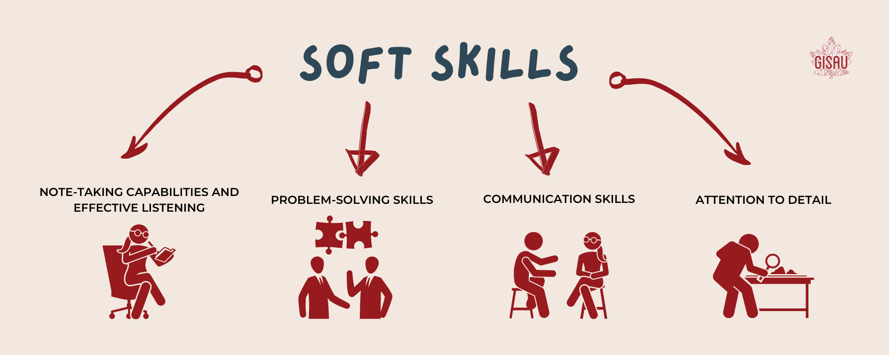
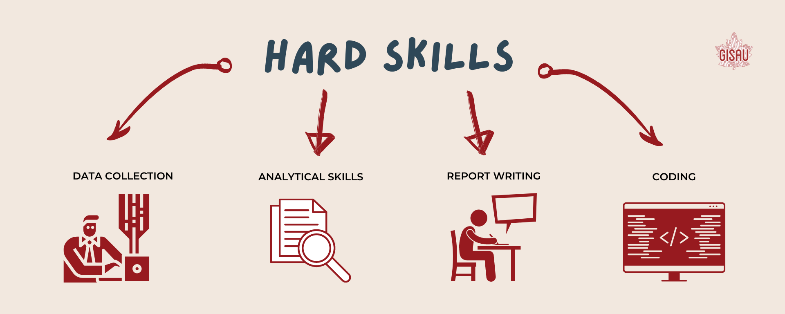
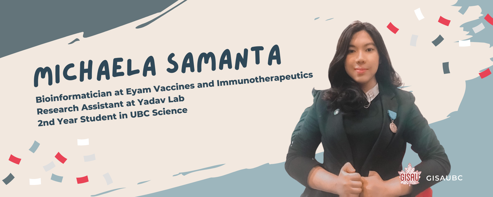
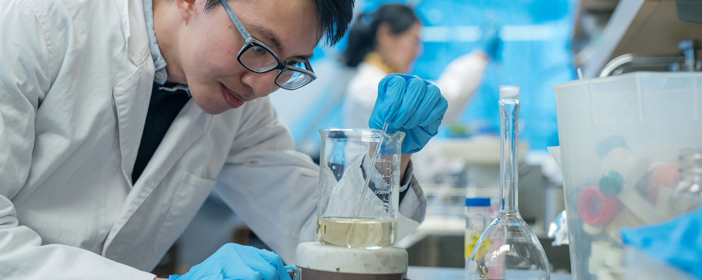

Just about how everyone knows how to drive a car, very few of us know how to build one

Written by:
Kathleen Jeanne
Last updated: December 1, 2021
For almost all history, research was a vital factor in solving
most of society’s biggest problems. If one needs to achieve a
robust conclusion about a looming question, they need to delve
into research and tackle the issue with a grassroots approach.
Take Dr. Ugur Sahin and Dr. Özlem Türeci, founders of BioNTech,
as examples. This husband-and-wife team is the pioneer behind
the Covid-19 vaccine. The stunning results of their research
vaulted their company to the forefront of the race to find a
cure for the coronavirus.
Perhaps, the BioNTech example is a bit of a stretch given that
we’re all students who are still exploring the field. But when
we talk about research, setting a clear goal is essential to
motivate ourselves. Research in all fields is important to
discover the unknown. However, if you have never been in a
research lab before and want to delve into the field, you’ve
come to the right place!
Research skills and where to get them: Beginners edition
To excel in the field of research, it is integral that you balance both your soft and hard skills. The former is a set of personality traits that strongly indicates your work ethic. Although they are not taught in courses and are purely formed by habit, they are still important to include in your resume. Some highly-demanded soft skills suitable for research include:

- Attention to detail
- Communication skills
- Note-taking capabilities and effective listening
- Problem-solving skills
Meanwhile, hard skills are quantifiable and technical skills that you can obtain through courses. Some of the most valued hard skills include:

- Data collection
- Analytical skills
- Report writing
- Coding
If you have yet to master any of the technical skills mentioned below, don’t fret! Working in a research lab often entails training and thus, a positive attitude and a strong willingness to learn will make you stand out like a sore thumb (in a good way!).
Tips from Michaela Samanta, a recipient of UBC Work Learn International Research Award

I talked to Michaela Samanta, a 2nd year Science student who is currently working in Eyam Vaccines and Immunotherapeutics as a Bioinformatician and as a Research Assistant in Yadav Lab. She is also the senior wet lab member of UBC iGEM, which means that she works with different chemicals and “wet hazards”. I have listed down below some of the important advice that students should know.
-
Identifying opportunities
The best way to identify opportunities is to reach out to professors and construct a proactive attitude. If there is a specific field that you are interested in, try to email multiple professors and ask them if they need an extra hand with their research. Otherwise, if you are unsure about your interests, keep an open mind and try out different fields. “In university, you have to go out of your way to find opportunities,” said Michaela. “No one will hand you these opportunities on a silver platter.” -
Prior background experience
You do not need to have a strong background experience if you are interested in exploring research. After all, we need to start somewhere. Instead, you need to be flexible in receiving information from your supervisor or your research work. “Professors or supervisors do not care about your grades or your experiences,” claimed Michaela. “They value someone who is teachable and has a good can-do attitude.” -
The application process
According to Michaela, the key to a successful application is your resume and cover letter. Essentially, you should take the time to build and polish them. Perhaps even get a third eye to give their feedback on your profile. “Grades don’t really matter as much, the lab team doesn't really look at your grades,” she pointed out. “But they pay a great deal of attention to a person’s personality.” -
Time management
A big factor about working in labs is creating a balanced work-life schedule. You need to develop a time that works with you and once you have, you ought to create a disciplined routine so that your work doesn’t pile up. -
Building a good attitude
Again, a great deal of optimism is more valuable than a life-long of experiences in working in a lab. “If I have to choose between a smart person or someone who has that excitement and flexibility to learn, I will absolutely choose the latter,” stated Michaela. Examples include using setbacks to improve your work and respecting your peers. Essentially, a good attitude will get you a long way.
Resources: Opportunities on and off-campus
From LinkedIn to the AMS Website, there are multiple ways for you to get involved. I have made a comprehensive list below for you to refer to, in case you suddenly become interested in research:
- UBC Student Services Website
- AMS Services
-
UBC Science
- Follow the URO link for a more detailed list of research opportunities
- UBC Science
- Work Learn

Important things to note: Reflecting and getting help
There are a lot of opportunities that you can identify out there. If you’re continuously experiencing rejection despite fixing up your resume multiple times, consider taking a step back to reflect on your goals and current skills. Jot down some of the things that you can improve or ask for feedback from the labs that you are applying to. Ultimately, when there’s a will, there’s always a way.
Concluding words
Lastly, good luck! No matter if you are just starting out with research or if this is your 4th year doing it, remember that there is no “right time” to get into the area. Continuously evaluate your goals and maintain a good character. Afterward, consider maximizing your research experiences and sell your story to employers.